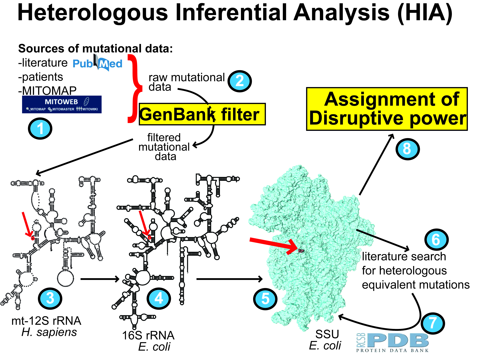
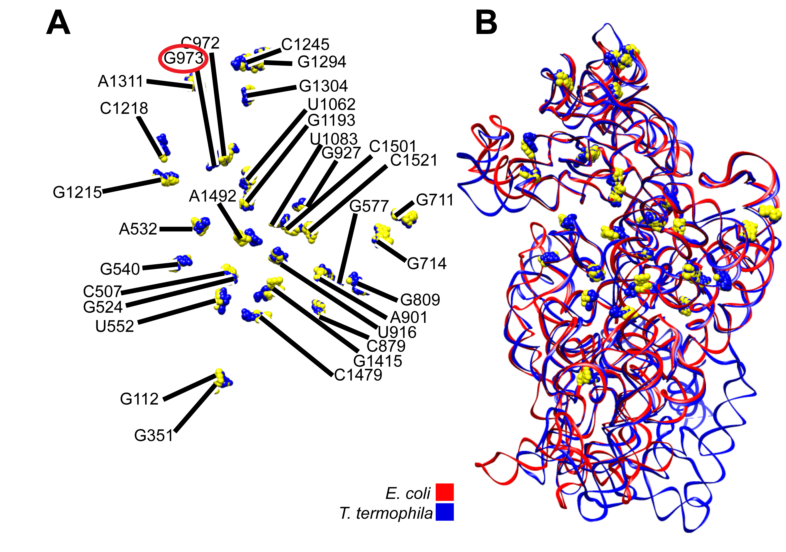
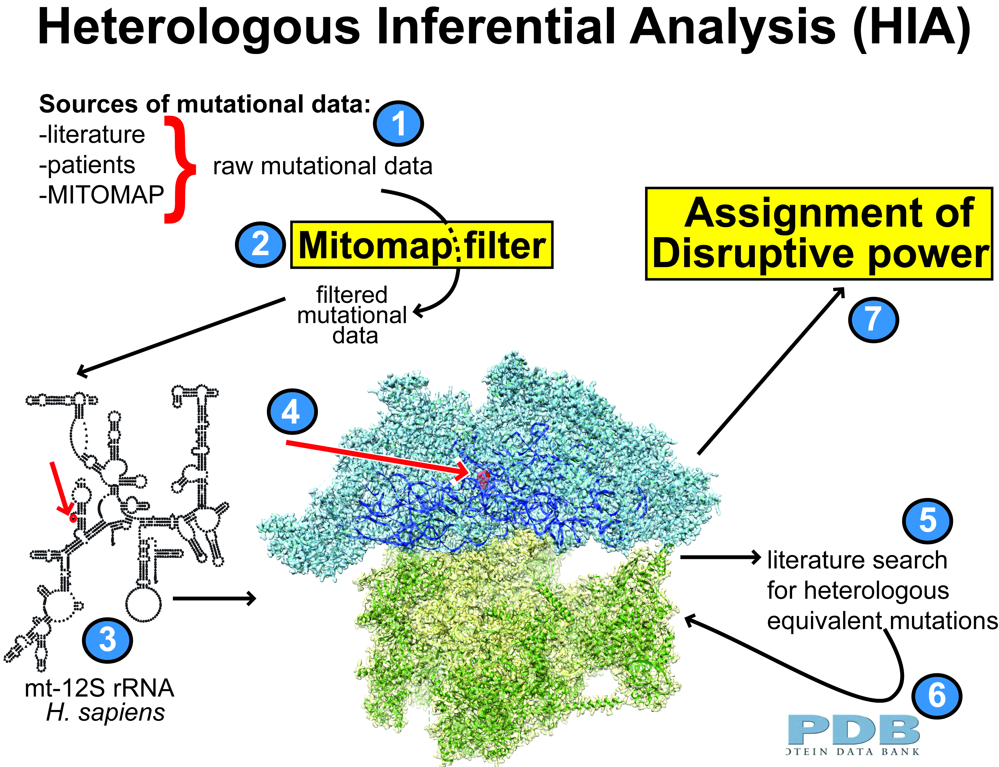
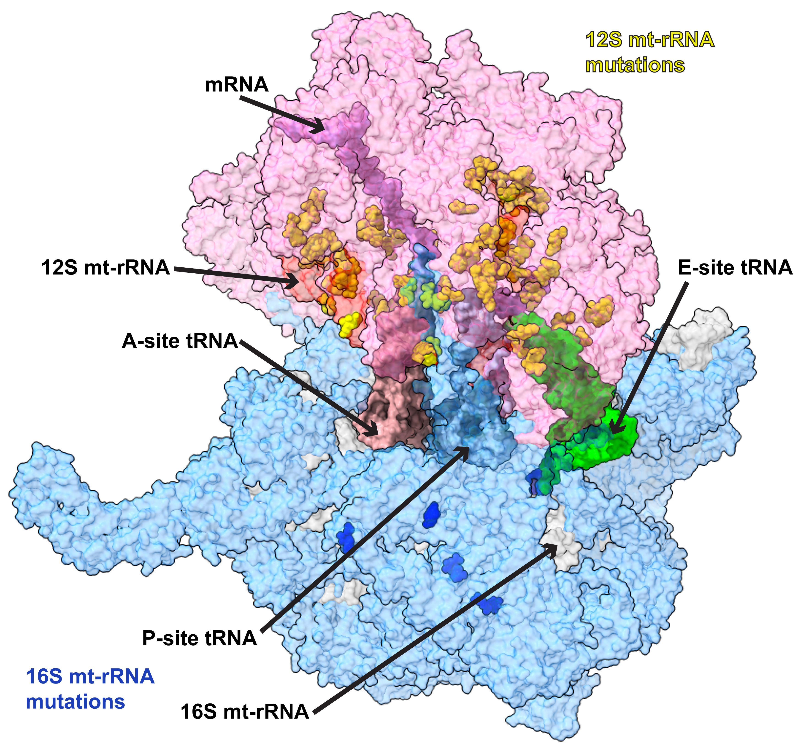

Antón Vila‑Sanjurjo · Associate Professor of Genetics, Universidade da Coruña · Ph.D. in Biology, Brown University (Providence, RI), 2001
Current efforts in the lab focus on understanding how the mitochondrial ribosome (mitoribosome) operates and how defects in mitochondrial translation contribute to human disease. To date, our main research effort has centered on the development and application of Heterologous Inferential Analysis (HIA), a framework originally designed to overcome the lack of experimental accessibility of mitochondrial rRNA.
HIA is grounded in the evolutionary conservation of ribosomal structure and translational fidelity mechanisms and exploits mechanistic insight from well‑characterized bacterial ribosomes to infer the consequences of mitochondrial rRNA variants. Over time, this approach has evolved from a conceptual solution into a predictive strategy, enabling the identification and prioritization of potentially disruptive mt‑rRNA variants linked to deafness, cancer metabolism, ageing‑related phenotypes, and genotype‑by‑environment interactions.
In its original implementation, structural evaluation of disruptive potential during HIA was performed on phylogenetically heterologous ribosomal structures, prior to the availability of high‑resolution mitoribosomal models.

Application of HIA to the study of 49 rare mutations mapping to the human 12S mt‑rRNA led to the identification of five Likely Disruptive and nine Expectedly Disruptive variants (see Smith et al., 2014).
The predictive power of HIA is best illustrated by the case of the expectedly disruptive m.1227G variant of the 12S mt‑rRNA. While the functional dominance of this variant has been established in recent large‑scale genetic and clinical studies, its disruptive potential had already been identified by HIA‑based analyses in our group more than a decade earlier, based on structural conservation and bacterial fidelity data. This trajectory exemplifies how HIA can anticipate functionally relevant mitochondrial variants ahead of direct genetic or clinical validation.

The advent of the first cryo‑EM structures of mitoribosomal particles in 2014 fundamentally transformed HIA. Reliance on phylogenetically heterologous structures for variant placement was no longer required. This updated HIA framework was used to explore the mutational landscape of the mitoribosomal large subunit (LSU). A total of 145 highly rare variants mapping to the human 16S mt‑rRNA were inspected, with 13 classified as Likely Disruptive and four as Expectedly Disruptive (see Elson et al., 2015).

Near‑2 Å‑resolution mitoribosomal structures now provide an unprecedented view of the organization of mt‑rRNAs, ribosomal proteins, tRNAs, and associated cofactors. Using these structures, we performed a comprehensive analysis of mt‑rRNA variants in the context of deafness. Of the 92 12S mt‑rRNA variants examined, 49 were classified as potentially non‑silent (see Vila‑Sanjurjo et al., 2023). Several of these variants map to the neighborhood of uS12m/MRPS12, a protein with a well‑established role in translational fidelity.

Understanding how the mitoribosome regulates translational fidelity and how fidelity defects contribute to human disease represents the next frontier of mitoribosomal research. Current efforts in the lab aim to complement inference‑based prediction with experimental strategies that allow mitoribosomal fidelity to be treated as a measurable and manipulable biological variable, bridging ribosome structure, translational accuracy, and cellular pathology.
Beyond primary mt‑rRNA studies, HIA has been applied in a range of biological contexts: